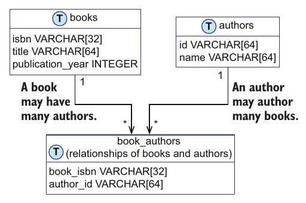
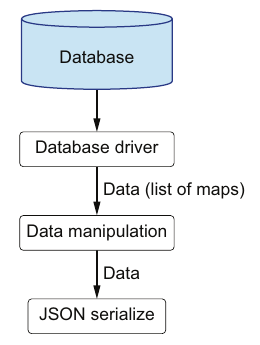
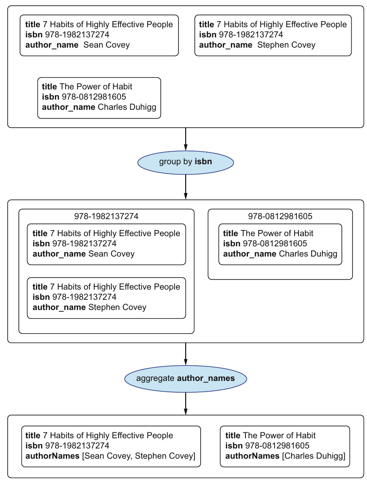

Chapter 10 · pp. 197–219
Database operations
Data-Oriented Programming, 1st Edition
Theo's fourth objection was that real data lives in a database, not in memory. OOP usually puts design patterns and layers of objects between code and the database. DOP represents query results the same way as any other data, as generic data collections: for a relational database, a list of maps whose fields are column values (pp. 197–198). The data flows from the database driver as a list of maps, through validation and generic data manipulation, to JSON serialization (figure 10.2, p. 202):
- In JavaScript, a driver like node-postgres returns a list of maps directly.
- In Java, a ten-line function converts a JDBC result set into one (listing 10.5).
Values stay typed as Object until the JSON serializer looks at them, which Joe calls late binding (pp. 202–204). Storing data passes map fields as query parameters, and _.at picks several at once (pp. 204–206). Because field names are just strings, fields are first-class, so generic functions can reshape any query's results. renameResultKeys renames columns from a key map (pp. 207–211). aggregateFields turns a join's three rows into two books, each with a list of author names, via _.groupBy (pp. 211–218). The chapter title's koan, "A cloud is a cloud," means: represent data as data (pp. 198, 218).
The chapter’s own outline (from the book’s table of contents)
- 10.1 Fetching data from the database — p. 198
- 10.2 Storing data in the database — p. 204
- 10.3 Simple data manipulation — p. 207
- 10.4 Advanced data manipulation — p. 211
- Summary — p. 218
From the book
Introduction
The chapter assumes basic SQL (SELECT, AS, WHERE, INNER JOIN) and says the approach adapts easily to NoSQL databases (p. 197). Representing database data as generic collections gives reduced system complexity and increased genericity (p. 198).
From the book
10.1 Fetching data from the database
On a bench by a lake, Theo sees a horse and a car in the clouds; Joe answers, "A cloud is a cloud" (p. 198). Theo's rough database model (figure 10.1, p. 199):


book_authors table.The sample data (tables 10.1–10.3, p. 199):
- Books: The Power of Habit (2012) and 7 Habits of Highly Effective People (1989).
- Authors: Sean Covey, Stephen Covey and Charles Duhigg.
- Links: 7 Habits to both Coveys, and The Power of Habit to Duhigg.
A SELECT title, isbn, publication_year FROM books WHERE title LIKE '%habit%' returns both books. As data, that is a list of two maps, described by a JSON Schema that requires the three fields (listings 10.1–10.4, pp. 200–201). Theo writes the schema with Joe's cheat sheet, since "the purpose of a gift is to be used by the one who receives it" (p. 201).


| Language | Driver to list of maps |
|---|---|
| JavaScript | A driver like node-postgres (p. 202) |
| Java | JDBC plus convertJDBCResultSetToListOfMaps, which loops over rows and puts getColumnLabel(i) → getObject(i) in a HashMap (listing 10.5, pp. 202–203) |
Late binding (pp. 203–204): each value in the converted maps is an Object. Book search never looks at the types; it passes them along. The type only matters at JSON serialization, where a library like Gson detects it at run time and writes publication_year without quotes and title with them. "With late binding, we defer dealing with data types as long as possible."
Listing 10.6 puts it together (p. 204):
- Run a parameterized query, a security best practice, through
dbClient.query. - Validate the rows against
dbSearchResultSchemawith Ajv'sallErrors; on failure, throw "Internal error: Unexpected result from the database" with the error text. JSON.stringifythe rows.
The chapter writes JavaScript I/O as if it were synchronous; real code would use async/await (p. 203).
Vault note: two details of listing 10.6 wouldn't work as printed (p. 204). First, the query selects only title and isbn, but dbSearchResultSchema (listing 10.4) requires publication_year, so validation would fail on every row. Second, in PostgreSQL a $1 inside a quoted literal ('%$1%') is just text, not a parameter. The usual form is LIKE '%' || $1 || '%', or passing "%habit%" as the parameter. The lab runs the corrected query.
From the book
10.2 Storing data in the database
Adding a member is a parameterized INSERT INTO members (email, encrypted_password) VALUES ($1, $2), with the values taken from the member map (listings 10.7–10.8, pp. 204–205).
Theo finds _.get(member, "email") cumbersome compared with member.email. JavaScript allows dot notation on maps, but the book avoids it to show how DOP applies in languages, like Java, where dot notation isn't available for hash maps (p. 205). The flexible access pays off with _.at, which returns the values for a list of keys, in that order (listings 10.9–10.10, pp. 205–206):
dbClient.query(addMemberQuery, _.at(member, ["email", "encryptedPassword"]));From the book
10.3 Simple data manipulation
Database columns are in snake case (publication_year); Joe wants publicationYear in JSON, and Theo wants bookTitle instead of title (p. 207). There are three options (pp. 207–209):
| Option | How | Verdict |
|---|---|---|
| Rename in SQL (listing 10.11) | title AS bookTitle, publication_year AS publicationYear | Works, but it's odd to bend a query to the application's naming, and harder in a database like MongoDB |
| A specific function per query (listing 10.12) | renameBookInfoKeys builds a new map | One function per kind of result |
| A generic function (listings 10.13–10.14) | renameResultKeys(results, {"title": "bookTitle", "publication_year": "publicationYear"}) | Works on any list of maps; unmentioned fields stay as they are |
renameKeys reduces over the key map: for each old key it sets the value under the new key, then _.omits the old one. renameResultKeys maps that over the rows (listing 10.14, p. 209). It's possible because fields are accessible dynamically by string, which makes fields first-class citizens (p. 209). It is unit-tested like any data function (listing 10.15). The same function renames email to userEmail in a query on users, because it is decoupled from the data it operates on (listing 10.16, pp. 210–211).
Vault note: the book calls publicationYear "Pascal case" (p. 207); the usual name for that style is camel case. Pascal case capitalizes the first letter too (PublicationYear).
Try it
Rename keys
Open full screen ↗ · the simulation is the vault’s own model of the mechanism the book describes.
From the book
10.4 Advanced data manipulation
Sometimes rows must be restructured, for example aggregating fields from several rows into one map. PostgreSQL's JSON aggregation can do that in SQL, but reshaping in the application keeps the SQL simple, and the code is reusable for other entities (p. 211). Joining books, book_authors and authors for "habit" gives three rows for two books, because 7 Habits has two authors (listing 10.17 and table 10.6, pp. 211–212). The target is two maps with authorNames lists (listing 10.19, p. 213).


The steps (pp. 213–218):
_.groupBy(sqlRows, "isbn")gives a map from ISBN to that book's rows (listings 10.20–10.21).- For one group (listing 10.22):
_.map(rows, "author_name")collects the names._.nth(rows, 0)takes the first row as the basis,_.setaddsauthorNames, and_.omitremovesauthor_name. - Generalize to
aggregateField(rows, fieldName, aggregateFieldName)and test it (listings 10.23–10.24). - Combine into
aggregateFields(rows, idFieldName, fieldName, aggregateFieldName): group by the ID field, take the values (the keys don't matter), and mapaggregateFieldover each group (listings 10.25–10.26).
Theo understands the koan now: instead of trapping data in objects, represent data as data (p. 218).
| Lodash function (p. 219) | Description |
|---|---|
at(map, [paths]) | Array of the values at paths |
omit(map, [paths]) | Map without the fields in paths |
nth(arr, n) | Element at index n |
groupBy(coll, f) | Map from f(element) to the elements that produced it |
Run it: the rows-as-maps experiment loads the chapter's tables into SQLite, fetches rows as dictionaries, validates them, renames keys and aggregates the join.
Vault note: the ISBNs differ between chapters. Chapter 7's search response gives 7 Habits 978-0812981605 and The Power of Habit 978-1982137274 (p. 149). This chapter's tables swap them, and they're consistent within the chapter (p. 199). Listing 10.18 also prints "publication_year": "Sean Covey" where "author_name" is meant (p. 212). The notes and widgets follow this chapter's tables.
Try it
Group and aggregate
Open full screen ↗ · the simulation is the vault’s own model of the mechanism the book describes.
Recap
Trade-offs at a glance
| Choice | Benefit | Cost |
|---|---|---|
| ORM or object layers (traditional OOP) | Typed objects; IDE support | Design patterns and class hierarchies per entity (p. 218) |
| Rows as a list of maps (DOP) | Generic code; JSON for free; no mapping classes | Values are Object in Java until used (p. 203) |
Reshape in SQL (AS, JSON aggregation) | One round trip; the database does the work | Queries bend to the app's conventions; varies by database (pp. 207, 211) |
| Reshape in the application | Simple SQL; reusable generic functions | Transfers duplicated columns, such as one row per author |
| Validate database results | Unexpected data stops at the boundary (ch. 7) | A schema to maintain per query |
Recap
Key takeaways
- The best way to manipulate data is to represent data as data (p. 197).
- Rows are maps. A relational result is a list of maps; NoSQL access works the same way (pp. 198, 200).
- Validate what the database returns with a JSON Schema before using it, and report errors as internal errors (listing 10.6, p. 204).
- JDBC is, in a sense, data-oriented: converting a result set into maps is straightforward (pp. 202–203).
- Late binding: values pass through as
Object, and only the JSON serializer, such as Gson, inspects their concrete types (pp. 203–204). - Flexible field access beats class members:
_.at(member, ["email", "encryptedPassword"])builds the parameter list (pp. 205–206). - Reshape in the application when it keeps SQL simple. Renaming in SQL with
ASworks but bends the query to the application's conventions, and some databases, MongoDB for instance, make it harder (pp. 207, 211). - Generic functions take field names as arguments, so the same code serves different entities (p. 218).
Practice
Check yourself
1How does DOP represent the result of a relational query?Show answer
2What is "late binding" in this chapter?Show answer
3What three steps does listing 10.6 take to serve a search from the database?Show answer
4What does _.at(member, ["email", "encryptedPassword"]) return, and why is it useful here?Show answer
5Why does Joe prefer renameResultKeys to AS in SQL or a per-query function?Show answer
6How does aggregateFields turn the three join rows into two books?Show answer
Supplement
Beyond the book
Vault supplement — not from the book.
- Drivers that already speak maps. Python's
sqlite3returns rows asdict-like objects withrow_factory = sqlite3.Row. Clojure's next.jdbc returns maps by default. node-postgres returns objects keyed by column name. JDBC is the outlier that needs the conversion function. - Name collisions in joins. A map keyed by column label loses data when two joined tables share a column name, such as
id; the later column silently overwrites the earlier. Joe'sgetColumnLabelrespectsASaliases, so aliasing in the SELECT, as listing 10.17 does withauthor_name, avoids it. renameKeysand identity mappings. In listing 10.14, a mapping from a key to itself ({"isbn": "isbn"}) sets the value and then omits the same key, deleting the field. Two keys swapped in one map ({"a": "b", "b": "a"}) also go wrong, because the second rename sees the already-renamed value. Lodash has no built-in rename; a safer version builds the result from scratch rather than updating in place.aggregateFieldkeeps the first row's other fields. If the rows of one group disagree on a non-aggregated column, for example a book row joined with two different editions, the later values are silently dropped. That is fine for the book's case, where everything but the author name repeats.- The N+1 alternative. Fetching books and then querying authors per book avoids duplicate columns but costs one query per book. The single join plus in-memory grouping shown here is usually the better trade.
Next steps
Keep going
Run it
Loads tables 10.1–10.3 into an in-memory SQLite database, with a row factory that returns each row as a dictionary: the driver step of figure 10.2. It then runs the chapter's search as printed and corrected, and validates the rows against the schema. Last, it renames keys with one generic function for books and users, and aggregates the three-row join into two books.
cd books/data-oriented-programming/lab/10-rows-as-maps
python3 rows_as_maps.pyConnections
- Generic functions: this chapter extends the toolkit from 3. Basic data manipulation with
at,omit,nthandgroupBy. - Validation at the database boundary: 7. Basic data validation.
- Next: 11. Web services applies the same approach to data from external services.
- More generic manipulation: 14. Advanced data manipulation.
- Run it: Rows as maps with SQLite — runs the chapter's queries against an in-memory database with the corrected
LIKEparameter.